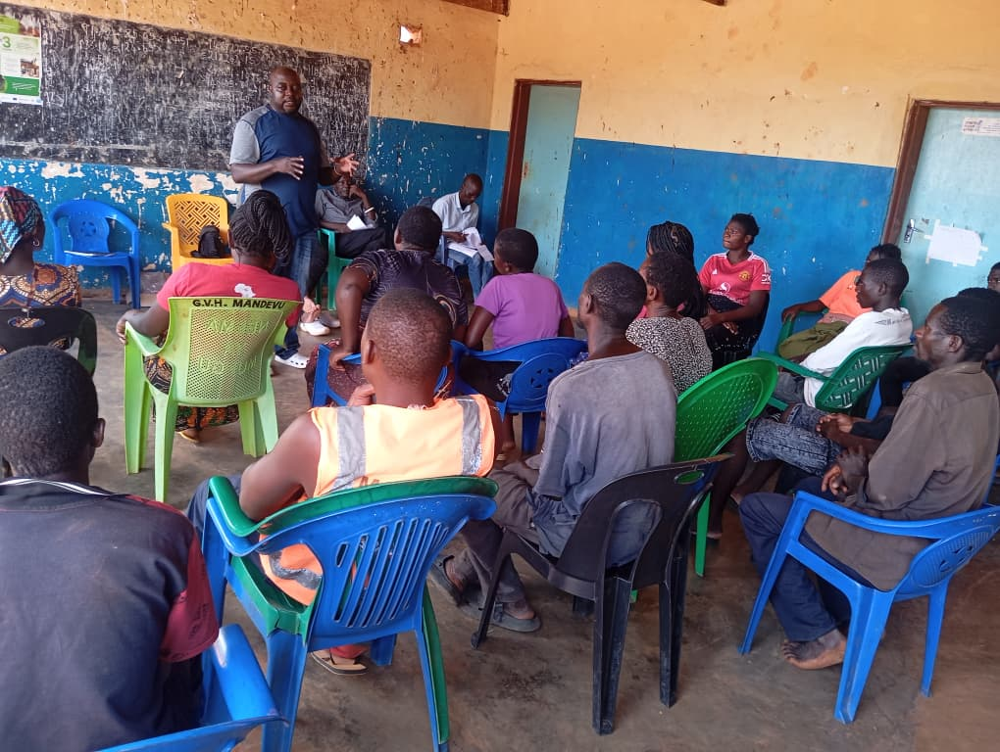
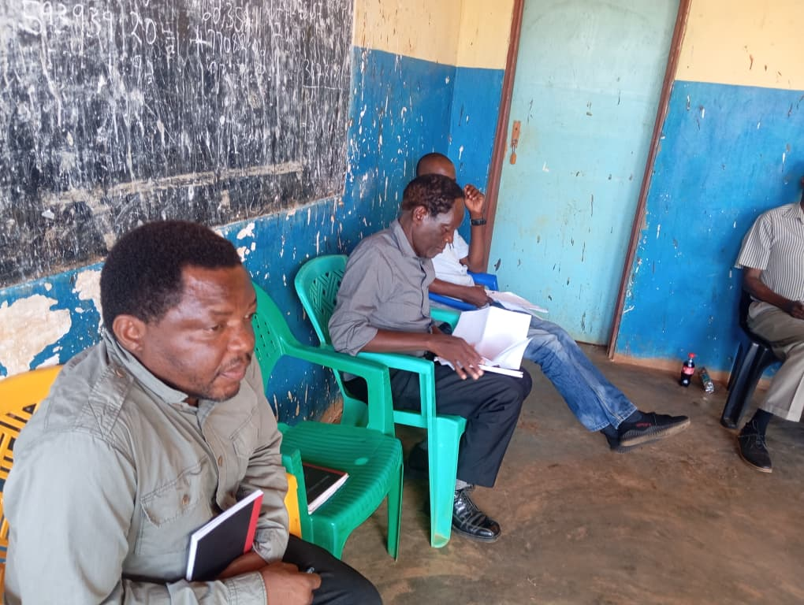

Education Support
Scholarship initiatives and education partnerships supporting vulnerable learners.
Building hope, resilience and opportunity for vulnerable communities across Malawi.
Learn About Us Get in TouchGlobal Faith and Hope Foundation (GFHF) is a Malawi-based, community-focused NGO which responds to humanitarian and social needs of vulnerable communities.
Our work focuses especially on children, women, youth and disadvantaged groups, while strengthening community structures and collaboration with local and district authorities.

Community-based programmes designed to strengthen wellbeing, resilience and livelihoods.

Scholarship initiatives and education partnerships supporting vulnerable learners.

Empowerment, leadership development and opportunities for women and young people.

Tree replenishment, biodiversity conservation and climate-smart community action.

GFHF promotes climate-smart agriculture, drought-resistant crops, food security, sustainable livelihoods, fuel-efficient cookstoves and community awareness on climate risks.